Создание игр в Roblox Studio
Диалоговая система Roblox
Диалоговая система
В этом занятии мы продолжим работу с игровыми персонажами (NPC) и добавим персонажу, созданному на прошлом занятии, диалоговую систему.
В большинстве игр есть персонажи, разговаривающие с игроком и дающие ему различные квесты, рассказывающие о мире вокруг, продающие различные вещи и т.д. Все они взаимодействуют с игроком при помощи диалогов - фраз, на которые игрок должен ответить одним из предложенных вариантов ответных фраз.
Для создания таких систем в Roblox Studio есть специальные объекты, позволяющие достаточно легко настроить диалог с таким персонажем.
В течение этого занятия мы создадим диалоговую систему для персонажа и добавим несколько скриптов для анимации NPC при выборе игроком вариантов ответа на его реплики.
Создание диалога
Для добавления NPC возможности разговаривать с игроком, в Roblox Studio используется специальный объект Dialog - модуль, расширяющий функционал NPC и сообщающий Roblox, что в этом персонаже предусмотрен диалог с игроком.
Обычно Dialog добавляется в качестве дочернего объекта к голове NPC. Выберите вашего NPC, раскройте его группу в Explorer и найдите в частях тела голову.
Нажмите на плюс и добавьте объект Dialog:
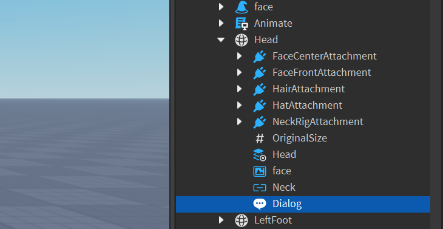Чтобы диалог заработал, его нужно настроить. Откройте его настройки в окне Properties. Сперва необходимо настроить приветственную фразу персонажа, которую он произнесет при активации диалога. Для этого найдите параметр InitialPrompt. Текст, который вы укажете в этом параметре, будет произнесён NPC как приветственная реплика в начале диалога.
Измените текст на приветствие:
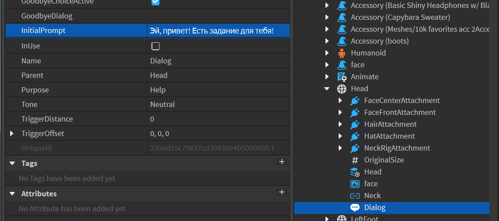Позже мы будем добавлять варианты ответа на реплики NPC, но одну из них мы можем добавить на этом этапе - реплику прощания.
Найдите параметр GoodbyeDialog и напишите фразу, которую будет произносить ваш персонаж при прощании с NPC. Сейчас она не будет доступна, однако после добавления вариантов ответа, вы увидите её в списке.
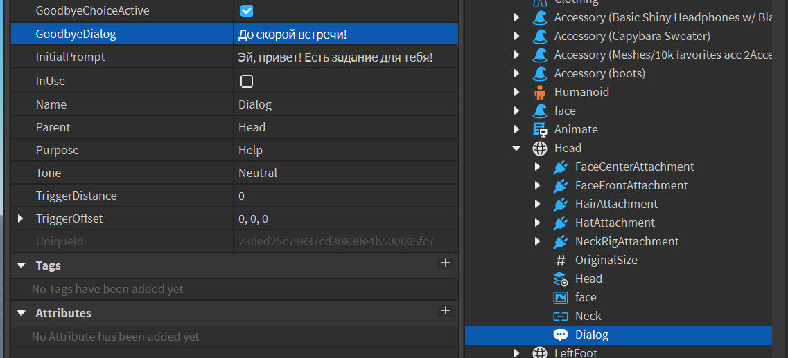Теперь персонаж сможет заговорить с игроком. Запустите игру, подойдите к персонажу и нажмите на иконку диалога - NPC произнесет указанную вами фразу:
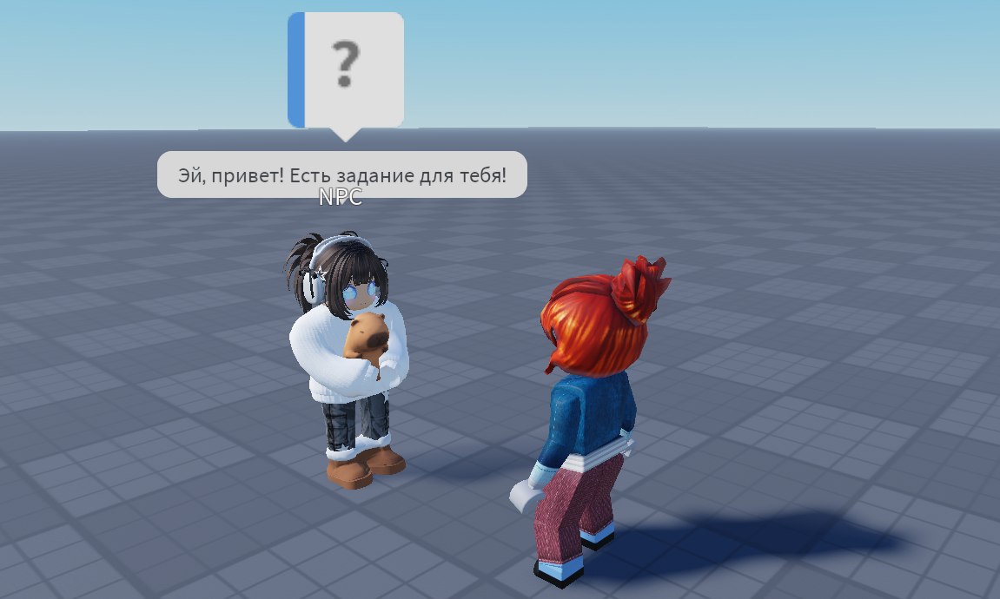Также можно изменить дополнительные настройки Purpose и Tone. Purpose изменяет тип диалога. По умолчанию доступны три варианта: Help, Quest и Shop.
Укажите вариант Quest, чтобы игрокам было понятно, что этот персонаж выдаст им задание.
Тон определяет отношение NPC к игроку: нейтральное, дружеское или агрессивное.
Установите дружеское, чтобы изменить цветовую маркировку диалога.
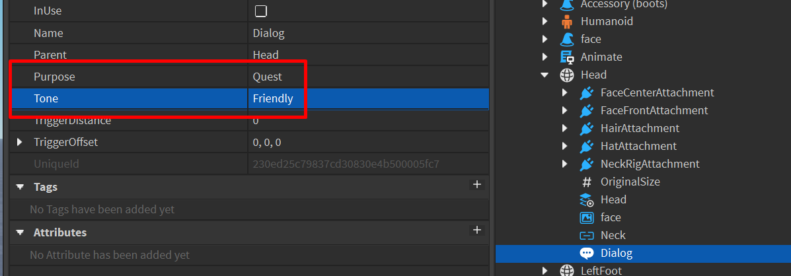Диалоговое дерево
В большинстве хороших игр диалоги строятся по системе диалогового дерева: одна реплика NPC дает игроку несколько вариантов ответа на неё. В зависимости от выбранного варианта, NPC произнесет одну или другую ответную реплику.
Если игра подразумевает глубокие и проработанные диалоги, вариации ответов и возможных развитий разговора могут разрастаться в запутанную структуру связанных между собой сложной логикой переходов из одного блока диалога в другой. Такая система называется диалоговым деревом (DialogTree) и обычно создается геймдизайнерами и сценаристами.
В Roblox Studio есть возможность создавать подобные структуры, однако это достаточно сложный процесс, поэтому в этом занятии мы рассмотрим базовый подход к созданию диалоговых систем, добавляя различные ответы игрока на реплики NPC в окне Explorer.
Добавление вариантов ответа
Добавим первый ответ. Выберите объект Dialog в Explorer и добавьте к нему дочерний объект DialogChoice.
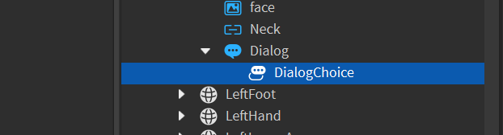Это ещё один специальный объект, позволяющий добавлять дополнительные варианты ответа на реплики NPC.
Откройте его настройки в окне Properties. Чтобы настроить ответ и последующую реплику персонажа, нужно настроить два параметра: UserDialog и ResponseDialog.
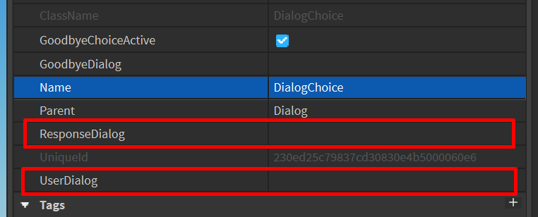UserDialog - это ответ игрока на предыдущую реплику NPC, записанную в родительском объекте. Именно эту строку вы увидите в списке возможных ответов. ResponseDialog - ответ NPC на выбранную игроком реплику.
Настройте эти параметры:
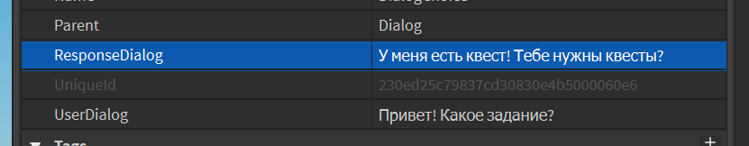Запустите игру и подойдите к персонажу. Как и в прошлый раз, нажмите на диалог, и вы увидите, что у игрока появились две возможные реплики: ответ, записанный в DialogChoice, и прощальная реплика из родительского объекта Dialog.
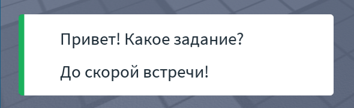Таким образом можно добавлять множество различных веток диалога, создавая сложные и интересные разговоры между игроком и NPC.
Чтобы не запутаться в ответах игрока, переименуйте объекты DialogChoice:
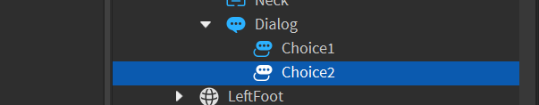Следующий шаг - добавить ещё одну ступень разговора. Продолжим ветку, в которой игрок интересуется, что от него хочет NPC. Выберите соответствующую ветку диалога и добавьте к ней дочерний DialogChoice. Этот вариант ответа будет доступен, если игрок выберет родительскую реплику.
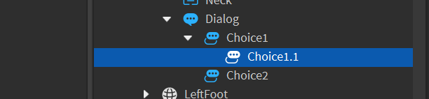Настройте этот ответ так, чтобы в нём игрок интересовался квестом, а NPC рассказал про него:

Добавьте ещё один вариант ответа к первой реплике и самостоятельно настройте его. Запустите игру и посмотрите на результат.
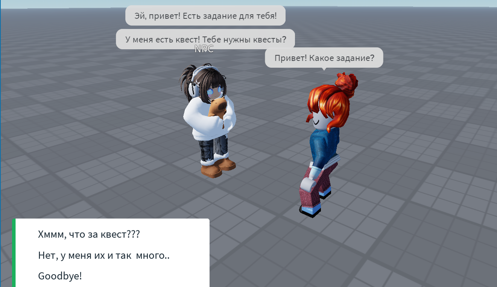На данном этапе работа с диалогом завершена.
Добавление анимации к NPC
В предыдущем модуле мы создавали различную анимацию персонажей. У вас есть анимация взмаха рукой, прыжка, танца и удара. Также есть анимациии, которые вы создавали в домашней работе самостоятельно.
Теперь давайте прикрепим одну из созданных ранее анимаций к NPC, у которого настроен диалог.
Найдите персонажа в окне Explorer, после чего нажмите на плюсик рядом с ним и добавьте скрипт:
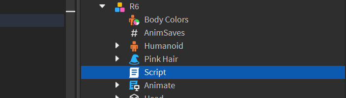Далее нажмите на плюсик рядом со скрипом и добавьте объект Animation:
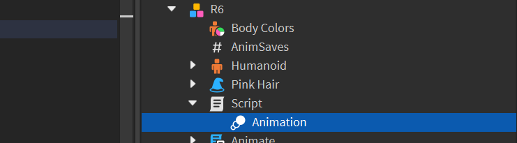Нажмите на добавленный объект Animation и зайдите в окно Properties. У анимации есть свойство AnimationId, куда вставляют ID анимации, т.е. её уникальный номер.
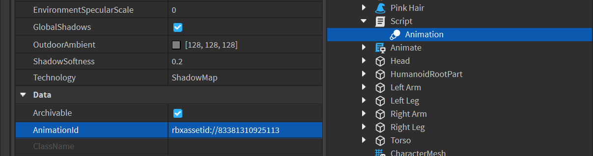Откройте ToolBox, раздел с лампочкой и выберите Animations. Здесь есть список опубликованных вами анимаций. Если там пусто, то сначала опубликуйте какую-нибудь анимацию в Roblox.
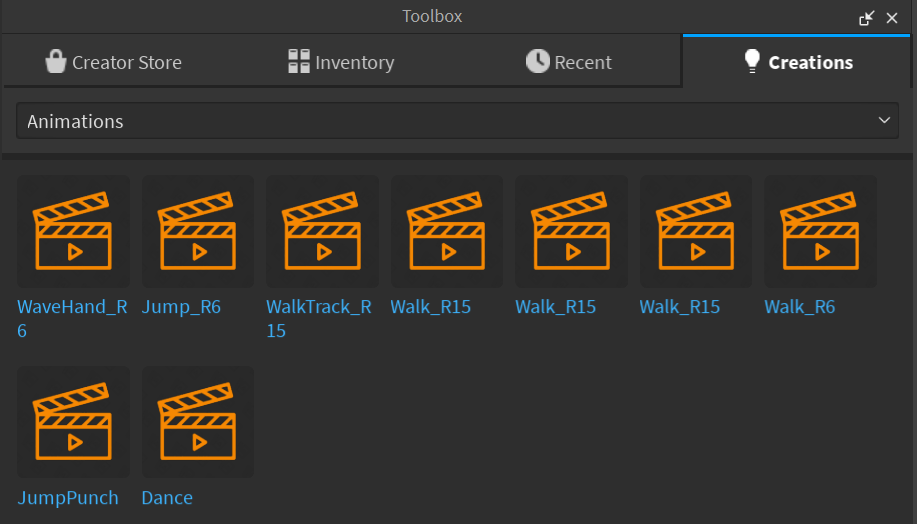Выберите ту анимацию, которая соответствует типу вашего персонажа. Если персонаж типа R6, то ему подойдёт только анимация для R6. Нажмите на выбранную анимацию правой клавишей и скопируйте её ID (Copy Asset ID):
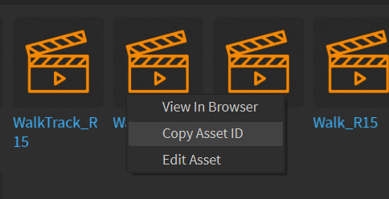Ещё раз выберите добавленный объект Animation в окне Explorer и далее в окне Properties вставьте скопированный ID в строку AnimationId.
Откройте скрипт и добавьте в него следующий код, который загружает анимацию персонажа и бесконечно проигрывает её во время игры:

Всё готово! Теперь запустите игру и проверьте, работает ли анимация у NPC. Анимация может не работать, если вы выбрали анимацию, неподходящую для вашего типа персонажа, попробуйте выбрать другую анимацию, вставить её ID, как описано выше, и попробуйте запустить игру ещё раз.
Домашкаа 😁
Необходимо придумать и создать ещё один диалог для NPC, созданного в предыдущем домашнем задании. В диалоге должно быть несколько веток. По желанию можно применить какую-нибудь анимацию к NPC.